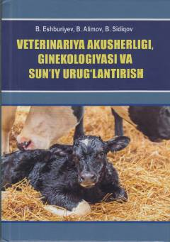

VAVeterinariya talabalari uchun hayvonlar akusherligi va sun'iy urug'lantirish bo'yicha mukammal darslik.
Ushbu darslik veterinariya meditsinasi yo'nalishi talabalari va sohasi mutaxassislari uchun mo'ljallangan bo'lib, hayvonlar akusherligi, ginekologiyasi hamda sun'iy urug'lantirish jarayonlarini qamrab oladi. Kitobda turli hayvonlarning jinsiy a'zolari anatomiyasi, fiziologiyasi, bo'g'ozlik, tug'ish va tug'ishdan keyingi davr patologiyalari hamda ularni davolash usullari batafsil bayon etilgan. Shuningdek, embrion transplantatsiyasi va yangi tug'ilgan hayvonlar parvarishi kabi muhim mavzular yoritilgan.